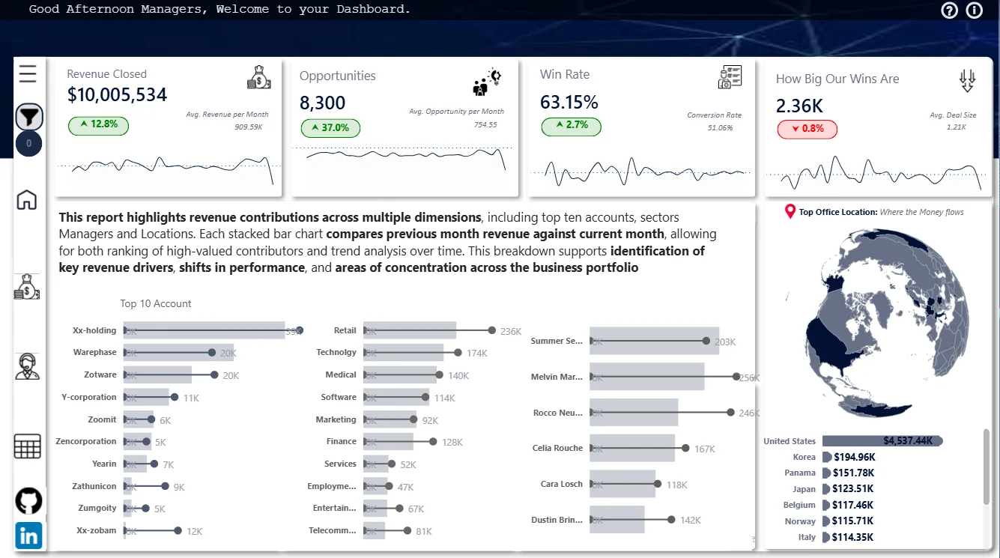
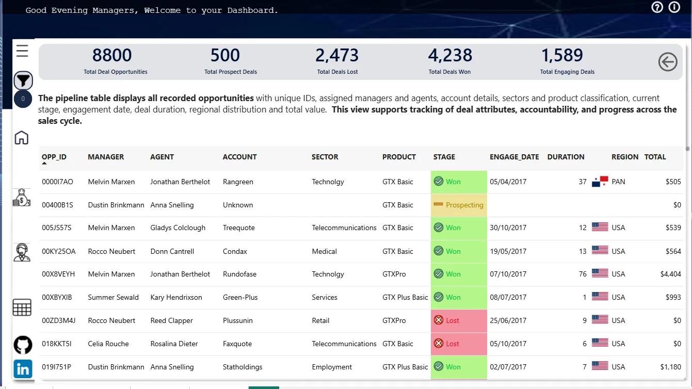

The solution
The code on this page is straight from my project files, only re-indented. Long functions are excerpts and say what I cut. Every number traces to metrics.json, the file my training run writes, plus my test summary report and my profiles of the raw CSVs.
I built the project as one pipeline with three consumers. CSVs load into a SQL Server database, where two scripts clean and enrich the tables. The Power BI report reads those tables for the descriptive questions. The Python branch pulls a joined extract, engineers a compact 28-feature set, cross-validates and tunes on the training split only, evaluates once on the held-out test set, and pickles the model with a metrics file. A FastAPI service loads the pickle and serves predictions from Docker, and a test script scored the 1,589 open deals and wrote the summary report the business page discusses.
| Component | Where it lives | Role |
|---|---|---|
| SQL Server database | CRM_Sales_Opportunity | Cleaned fact and dimension tables |
| SQL cleaning scripts | SQL Scripts (2 files) | Flags, imputations, deduplication, account tiers, audit query |
| Power BI report | CRM Recovered.pbip | Three-page descriptive dashboard |
| DAX measures | 4 measure tables in the model | KPIs, month-over-month arrows, agent rankings, conditional formatting |
| Training code | models.py with experiments.py and tune.py | Feature experiments, CV, tuning, single test evaluation, metrics file |
| API | main.py (FastAPI) | predict, predict-batch, health and metrics endpoints |
| Container | Dockerfile | Slim Python 3.13 image, pipenv dependencies, port 9696 |
| Scoring script | test.py | Scores the 1,589 open deals, writes the summary report |
The data and profiling
Four tables carry the model and the report. When I profiled the CSVs directly, I got:
| Table | Rows | What it holds |
|---|---|---|
| sales_pipeline | 8,800 | One row per opportunity: agent, product, account, deal stage, engage date, close date, close value |
| accounts | 85 | Sector, year established, revenue, employees, office location |
| products | 7 | The product catalogue |
| sales_teams | 35 | Agent, manager, regional office |
| Check | Result | What it means |
|---|---|---|
| Deal stages | Won 4,238, Lost 2,473, Engaging 1,589, Prospecting 500 | 6,711 closed deals for training; 1,589 open deals to score; 500 too early to judge |
| Win rate on closed deals | 63.2% | The baseline the open pipeline is compared against |
| Dates | Engagements Oct 2016 to Dec 2017; closings Mar to Dec 2017 | About 14 months of history |
| Missing close value and close date | 2,089 rows each | Exactly the engaging plus prospecting rows. Structural, not dirty |
| Missing account | 1,425 rows | Cleaned to 'Unknown' in SQL so joins survive |
| Duplicate opportunity ids | 0 | The SQL deduplication is a safety net |
| Won close values | Sum $10.0M, mean $2,361, range $38 to $30,288 | Right-skewed, which is why the model uses a log-transformed employee count and tree-based learners |
| Sector values | Includes 'technolgy' in 12 accounts | A spelling error that case normalization does not fix |
The SQL cleaning layer
Two scripts run against the raw tables before anything reads them. The pipeline script adds an active-deal flag, fixes structural nulls, standardises text, deduplicates, and ends with an audit query.
--Creating a new is_active column to track early stage deals
ALTER TABLE [dbo].[sales_pipeline]
ADD is_active BIT;
--Flag early stage deals as is_active (Engaging, lead, prospect)
UPDATE [dbo].[sales_pipeline]
SET is_active = CASE
WHEN deal_stage IN ('Engaging', 'Lead', 'Prospect') THEN 1
ELSE 0
END;
-- Fix Null in close_value for deals not yet Won (set to 0)
UPDATE [dbo].[sales_pipeline]
SET [close_value] = 0
WHERE close_value IS NULL AND deal_stage != 'Won';
-- Fix Null close_date for closed deals either won or lost set as currrent date
UPDATE [dbo].[sales_pipeline]
SET [close_date] = GETDATE()
WHERE [close_date] IS NULL AND deal_stage IN ('Won', 'Lost');
--Handling Null account(Primary Key) set as Unknown
UPDATE [dbo].[sales_pipeline]
SET [account] = 'Unknown'
WHERE [account] IS NULL ;
--Capitalize deal_stage consistently
UPDATE [dbo].[sales_pipeline]
SET [deal_stage] = UPPER(LEFT([deal_stage],1)) + LOWER(SUBSTRING([deal_stage], 2, LEN([deal_stage])));
--Removing any duplicate opportunities(keep the earliest engaging_date) if any
WITH Duplicates_opp AS (
SELECT [opportunity_id],
ROW_NUMBER() OVER(PARTITION BY [opportunity_id] ORDER BY [engage_date] ASC) rn
FROM [dbo].[sales_pipeline]
)
DELETE FROM [dbo].[sales_pipeline]
WHERE [opportunity_id] IN (
SELECT [opportunity_id]
FROM Duplicates_opp
WHERE rn > 1
);
-- Audit summary by deal_stage
SELECT
[deal_stage],
COUNT(*) total_opportunities,
SUM(CASE WHEN [account] IS NULL THEN 1 ELSE 0 END) null_acct,
SUM(CASE WHEN [close_date] IS NULL THEN 1 ELSE 0 END) null_close_date,
SUM(CASE WHEN [close_value] IS NULL THEN 1 ELSE 0 END) null_close_values
FROM [dbo].[sales_pipeline]
GROUP BY [deal_stage]
ORDER BY total_opportunities DESCThe account script standardises sector case, drops a column that is mostly blank, and buckets every account by size. The bucket boundaries then live in the database, so the dashboard, the model and any other consumer see the same tiers.
--Capitalize sector consistently
UPDATE [dbo].[accounts]
SET [sector] = UPPER(LEFT([sector],1)) + LOWER(SUBSTRING([sector], 2, LEN([sector])));
--Drop subsidiary column since its have 80% Null
ALTER TABLE [dbo].[accounts]
DROP COLUMN [subsidiary_of];
--Creating a new account_tier column to categorize business account by employees
ALTER TABLE [dbo].[accounts]
ADD account_tier VARCHAR(20);
--Categorizing account into tiers based on employees
UPDATE [dbo].[accounts]
SET [account_tier] = CASE
WHEN [employees] BETWEEN 1 AND 9 THEN 'Micro_Enterprise'
WHEN [employees] BETWEEN 10 AND 49 THEN 'Small_Enterprise'
WHEN [employees] BETWEEN 50 AND 249 THEN 'Medium_Enterprise'
ELSE 'Large_Enterprise'
END;Design notes
GETDATE() invents close dates
Writing today's date into deals that closed months ago corrupts any duration analysis. Keep the null and flag the row, or use a known audit date.
'Unknown' hides the gap
1,425 deals with no account still exist, just under a label. Keep a flag column so the gap stays countable.
DELETE without an archive
The deduplication deletes rows outright. In this dataset it found zero duplicates, but on real data it should write them to a quarantine table first.
The ELSE bucket catches nulls
An account with a null employee count falls through to Large_Enterprise. Add an explicit null branch or a check constraint.
Case fixes are not spellcheck
'technolgy' survives the capitalisation. Category fields need a domain list, not string functions.
The extract and feature engineering
Python pulls one joined extract and leaves prospecting behind, since those deals are too early to have a knowable outcome.

query = '''
SELECT p.*,
a.sector, a.year_established, a.account_tier, a.employees, a.office_location,
s.manager, s.regional_office
FROM dbo.sales_pipeline p
LEFT JOIN accounts a ON a.account = p.account
LEFT JOIN sales_teams s ON p.sales_agent = s.sales_agent
WHERE deal_stage NOT IN ('Prospecting')
'''
df = pd.read_sql(query, conn)
conn.close()That leaves 8,300 rows: 6,711 closed deals for training and evaluation, and 1,589 engaging deals held aside for scoring. Company size gets a log transform and six buckets, because employee counts run from 9 to 34,288 and the biggest companies would otherwise dominate every split.
#since only few companies are this large, we capped the outliers
df["employees_log"] = np.log1p(df['employees'])
bins = [0, 50, 250, 1000, 5000, 15000, np.inf]
labels = ['micro', 'small', 'medium', 'large', 'enterprise', 'mega']
df["company_size"] = pd.cut(df['employees'], bins=bins, labels=labels).astype(str)Deal age is the one duration feature that works for both closed and open deals: for closed deals it is the engage-to-close span, for open deals it is how long the deal has been alive as of the reference date.
df['closed_duration'] = (df['close_date'] - df['engage_date']).dt.days
df['active_duration'] = (ref_date - df['engage_date']).dt.days
df['deal_age'] = df['closed_duration'].fillna(df['active_duration'])The first version of this model carried 21 more features: hand-rolled win rates, deal counts and win counts per agent, account, sector, office, region, company size and product, always computed on the training split only so the encodings could not peek at held-out data. An experiment harness then measured whether they actually helped.
for tr_idx, val_idx in skf.split(train_df, train_df['target']):
fold_tr, fold_val = train_df.iloc[tr_idx], train_df.iloc[val_idx]
# within each fold, the win-rate statistics are computed on the
# FOLD-TRAIN rows only and mapped onto the fold-validation rows
feat_tr = build_features(fold_tr, fold_tr, use_stats)
feat_val = build_features(fold_tr, fold_val, use_stats)
m = make_pipeline(kind, cv_params, num, cat)
m.fit(feat_tr[num + cat], feat_tr['target'])
aucs.append(roc_auc_score(feat_val['target'],
m.predict_proba(feat_val[num + cat])[:, 1]))Five configs ran through it, with and without the hand-rolled statistics, plus a second round that searched XGBoost and LightGBM around the winner. The result was clear enough to act on: the statistics largely duplicate what the CatBoost target encoding already learns, and estimated from small, noisy groups they hurt out-of-sample discrimination, 0.57 cross-validated with them against 0.61 without. They were cut, and a proven winner from the tuning rounds stays locked into the final re-rank pool so a retrain can only match or improve on it.
numerical = [
'year_established', 'employees_log', 'deal_age',
'agent_product_synergy', 'agent_win_efficiency', 'agent_vs_sector',
'deal_complexity', 'office_load', 'product_sector_fit',
'region_size_match', 'quarter_risk', 'is_quarter_end',
'sales_velocity_ratio', 'pace_weighted_agent_score',
'velocity_complexity_index',
'month_engaged', 'quarter_engaged', 'day_of_week_engaged',
'is_weekend', 'days_into_year',
]
categorical = ['sales_agent', 'product', 'account', 'sector',
'office_location', 'manager', 'regional_office', 'company_size']The interaction block survives from the earlier design. The features driven by deal age and company size still carry signal; the ones built on the removed statistics now collapse to constants that a tree either splits on or ignores. The experiments say the model does not miss the removed information, because the CatBoost encoding reconstructs the category effects from the categories themselves.
Dropping leakage
leakage_columns = ['close_date', 'close_value', 'is_active', 'deal_duration',
'opportunity_id', 'employees', 'account_tier']
df_training = df_training.drop(columns=leakage_columns, errors='ignore')Only the first three are true leakage: close_date and close_value do not exist until a deal finishes, and is_active is derived from the stage the model is trying to predict. opportunity_id is an identifier, and employees and account_tier are dropped because their log and bucket versions replace them. Dropping close_value is the whole game here: a model that sees the deal's final value has read the answer off the row. That single decision is why the reported metrics can be believed at all.
The model
Training is one script (models.py). The pipeline is CatBoost encoding for the eight categorical columns and scaling for the 20 numerical ones, then XGBoost. Selection never touches the test set: a five-fold stratified baseline, a 30-combination randomized search, and a final re-rank of the top candidates scored with three repeats of five folds, with a proven winner from the tuning rounds locked into the pool.
def build_pipeline(**xgb_params):
preprocessor = ColumnTransformer(
transformers=[
('cb', CatBoostEncoder(cols=categorical, random_state=42), categorical),
('scaler', StandardScaler(), numerical),
],
remainder='drop',
)
return Pipeline([
('preprocessor', preprocessor),
('xgb', XGBClassifier(random_state=42, eval_metric='logloss',
**xgb_params)),
])
# 'locked_search3' is the proven winner from tune.py - kept in the pool
# so the final selection can only match or improve on it.
LOCKED = dict(n_estimators=600, learning_rate=0.02, max_depth=3, subsample=0.7,
colsample_bytree=0.9, min_child_weight=3, reg_lambda=3.0,
reg_alpha=1.0)repeats = RepeatedStratifiedKFold(n_splits=5, n_repeats=3, random_state=42)
results = search.cv_results_
top_idx = np.argsort(results['mean_test_score'])[::-1][:5]
candidates = [('baseline_300_lr05_d6', baseline),
('locked_search3', build_pipeline(**LOCKED))]
for rank, i in enumerate(top_idx, start=1):
params = {k.replace('xgb__', ''): v for k, v in results['params'][i].items()}
candidates.append((f'search_rank_{rank}', build_pipeline(**params)))
best_name, best_cv, model = None, -1, None
for name, pipe in candidates:
scores = cross_val_score(pipe, X_train, y_train, cv=repeats,
scoring='roc_auc', n_jobs=-1)
if scores.mean() > best_cv:
best_name, best_cv = name, scores.mean()The search settled on 500 estimators at depth 4 with a 0.01 learning rate, and the re-rank picked it over the baseline and the locked candidate. Class balance went into the search as a choice, scale_pos_weight 1.0 or the 0.58 lost-to-won ratio, and the cross-validation picked 1.0. The winner is refit on the full training split before the one test evaluation.
Evaluation, with the real numbers
These are the metrics exactly as metrics.json records them, from the single evaluation on the 1,343-row held-out test set.
| Model | Cross-validated ROC-AUC | Test ROC-AUC |
|---|---|---|
| XGBoost (selected) | 0.6132 (3x5 repeated CV) | 0.6085 |
| Randomized search best (5-fold) | 0.6122 | - |
| XGBoost baseline (slim features) | 0.5910 (5-fold) | - |
| Locked candidate (tune.py winner) | - | 0.6027 (single evaluation) |
One reading note: accuracy 62.8% sits right at the naive always-win baseline of 63.1% on this test set, which is exactly why the docs lead with ROC-AUC and the ranked probabilities. The value of the model is the ordering it produces, not the flag at 0.5.
The run also tuned the decision threshold on out-of-fold training predictions. It landed at 0.425, trading precision (63.1%) for total recall (100%) on the test set. The tuned number is stored in the artifact as metadata; the API ships 0.5 and reports both probabilities on every call, so the caller can apply the cutoff their use case needs.
Serving the model
main.py is a FastAPI service that loads the pickle once at startup and exposes five endpoints. The part worth reading is the contract: a Pydantic model defines the six required and four optional fields, so a malformed request fails validation with a useful message instead of a traceback.

class DealPredictionInput(BaseModel):
# REQUIRED FIELDS (no default value)
sales_agent: str = Field(..., description="Name of the sales agent")
product: str = Field(..., description="Product name")
account: str = Field(..., description="Customer account name")
sector: str = Field(..., description="Industry sector")
office_location: str = Field(..., description="Office location")
engage_date: str = Field(..., description="Deal engagement date (YYYY-MM-DD format)")
# OPTIONAL FIELDS (with defaults to fill any missing data)
manager: Optional[str] = Field(default="unknown", description="Manager name")
regional_office: Optional[str] = Field(default="central", description="Regional office")
year_established: Optional[int] = Field(default=1995, description="Year company was established")
employees: Optional[float] = Field(default=8.0, description="number of employees")
@app.post("/predict", response_model=PredictionOutput)
async def predict_single(deal: DealPredictionInput):
if artifacts is None:
raise HTTPException(status_code=503, detail="Model not loaded")
result = make_prediction(deal)
logger.info(f"Prediction result: {result['predicted_outcome']} "
f"({result['confidence']:.2%} confidence)")
return resultInside make_prediction, the API rebuilds every engineered feature from the raw request using the statistics maps saved in the pickle, then applies the model. The response always carries both probabilities and a confidence score, which is what lets the caller distinguish a 0.71 from a 0.51.
probabilities = artifacts['model'].predict_proba(X)[:, 1]
prob_won = float(probabilities[0])
prob_lost = 1 - prob_won
threshold = 0.5
if prob_won >= threshold:
predicted_outcome = "WON"
else:
predicted_outcome = "LOST"
# Calculate confidence (how sure is the model?)
confidence = max(prob_won, prob_lost)| Endpoint | Method | Purpose |
|---|---|---|
| / | GET | Welcome message and endpoint index |
| /health | GET | Is the API alive and the model loaded |
| /metrics | GET | Model type, stored ROC-AUC, feature counts |
| /predict | POST | One deal in, outcome with probabilities out |
| /predict-batch | POST | A list of deals, plus a summary of the results |
The Dockerfile keeps the image small (slim Python 3.13), installs dependencies from the pipenv lock file, and copies the pickle in with the code. The container exposes the same port uvicorn binds to.
#Use a slim Python image for a smaller container size
FROM python:3.13.9-slim
#Set working directory
WORKDIR /app
#Copy the pipfile install dependencies
COPY Pipfile Pipfile.lock ./
#FIX: Install pipenv globally in the container first, as it's not included in the slim image.
RUN pip install pipenv
#Now install project dependencies using pipenv
RUN pipenv install --system --deploy
#Copy model artifacts and application code
COPY sales_pipeline_model.pkl ./
#CRITICAL: Copy your application code
COPY main.py ./
#Expose the port that FastAPI will run on
EXPOSE 9696
#Command to run the application using Uvicorn
CMD ["python", "-m", "uvicorn", "main:app", "--host", "0.0.0.0", "--port", "9696"]The folder ships api_logs.txt from real runs, and test.py re-scored the 1,589 open deals through the serve path and wrote the summary report (every deal predicted to win, probabilities from 0.6494 to 0.8686, mean 0.7413). As the business page explains, that run is a path test on stale 2016-17 dates, not a pipeline read. Predictions and logs, not slides, are the evidence this service works end to end.
The Power BI side
The dashboard answers the descriptive half of the brief across three pages, about 150 visuals in total. Its roughly 45 measures live in 4 dedicated measure tables, grouped by job: deals, revenue, core KPIs and agent rankings. The signature pattern is a month-over-month trio per KPI: a percentage against last month with trend arrows, a green/red conditional-formatting measure, and a hex-colour variant for table rows. The ones worth showing are copied below; the model also holds quarterly top-agent measures that build a ranked table per quarter and return the agent at rank one.

success_rate
MeasurePurpose: the share of finished deals that were won.
Logic: DIVIDE protects against a zero denominator.
DIVIDE([deal_won],[deal_won] + [deal_lost])Review note. It sits next to conversion_rates = DIVIDE([deal_won],[opp_count]), where opp_count counts every non-prospecting deal including open ones. Keeping both definitions was deliberate: 'of everything engaged, what closed won' and 'of finished deals, what won' are different questions and a dashboard that conflates them misleads.
opp_count
MeasurePurpose: the pipeline size the funnel divides by.
Logic: CALCULATE with a filter that removes prospecting.
CALCULATE(COUNTROWS(sales_pipeline), sales_pipeline[deal_stage] <> "Prospecting")Review note. Same exclusion the training extract makes in SQL, so the report and the model describe the same population.
vs Last Month %
MeasurePurpose: the month-over-month arrow on every KPI card.
Logic: DATEADD shifts one month back, DIVIDE gets the change, and UNICHAR prints the up or down triangle with the formatted percentage.
VAR CM = [total_revenue_closed]
VAR PM_sales =
CALCULATE(
[total_revenue_closed],
DATEADD(DateTable[Date], -1,MONTH)
)
VAR perc = DIVIDE(CM - PM_sales, PM_sales)
VAR _format =
SWITCH(
TRUE(),
perc > 0, UNICHAR(11165) & " " & FORMAT(perc, "0.0%"),
perc < 0, UNICHAR(11167) & " " & FORMAT(perc*-1, "0.0%"),
FORMAT(perc, "0.0%")
)
RETURN
_formatReview note. The same pattern is replicated for deal_won, opp_count, success_rate and deal size, so every headline number carries its own movement. A month with nothing to compare against shows as a plain percentage.
Rank_by_deal_won
MeasurePurpose: rank agents by closed-won count across the whole model, regardless of the current visual's slice.
Logic: RANKX over ALL of the agent column, dense ranking.
RANKX(ALL(sales_pipeline[sales_agent]),
'deals measures'[deal_won], ,
DESC,Dense)Review note. A second measure, Previous_Rank, wraps this one in CALCULATE with PREVIOUSMONTH, and Rank_Chng compares the two to print the movement with last month's rank. Dense ranking keeps ties from skipping numbers.
CF Last Month
MeasurePurpose: a field-value conditional formatting measure.
Logic: same month-over-month calculation, returning a colour word instead of a number.
VAR CM = [total_revenue_closed]
VAR PM_sales =
CALCULATE(
[total_revenue_closed],
DATEADD(DateTable[Date], -1,MONTH)
)
VAR perc = DIVIDE(CM - PM_sales, PM_sales)
VAR _format =
SWITCH(
TRUE(),
perc > 0, "Green",
perc < 0, "Red",
"Grey"
)
RETURN
_formatReview note. A twin measure returns semi-transparent hex backgrounds for table cells. Encoding the colour rule once in DAX keeps the formatting consistent across visuals instead of hand-tuning each one.
WelcomeMsg
MeasurePurpose: a greeting card that names the manager whose view is active.
Logic: HOUR picks the greeting, SELECTEDVALUE reads the manager filter.
VAR CurrentHour = HOUR(NOW())
VAR Greetings =
SWITCH(
TRUE(),
CurrentHour < 12, "Good Morning",
CurrentHour < 17, "Good Afternoon",
"Good Evening"
)
VAR selectedManager = SELECTEDVALUE(sales_teams[manager], "Managers")
VAR Today = FORMAT(TODAY(), "dddd, mmmm dd, yyyy")
RETURN
Greetings & " " & selectedManager & ", Welcome to your Dashboard. "Review note. Small touch, real function: the header always tells you whose numbers you are looking at. SELECTEDVALUE falls back to a generic greeting when nothing or several managers are selected.
The report pages




How I verified the numbers
Every number both pages quote comes from a saved output of my own. I profiled the key figures from the project files as I built these pages, and these are the checks:
| Check | Expected | Result |
|---|---|---|
| Stage counts | Won + Lost + Engaging + Prospecting = 8,800 | Reconciles: 4,238 + 2,473 + 1,589 + 500 |
| Structural nulls | Missing close values = missing close dates = open deals | Reconciles: 2,089 = 2,089 = 1,589 + 500 |
| Duplicates | Deduplication is a safety net | Reconciles: 0 duplicate opportunity ids |
| Win rate | Won / closed from the CSV | Reconciles: 4,238 / 6,711 = 63.2% |
| Test split size | Classification report support = 20% of 6,711 | Reconciles: 1,343 rows |
| Test class balance | Report support matches the raw 63/37 split | Reconciles: 848 won (63.1%), stratified split |
| Open-deal scoring | Summary report count = engaging rows | Reconciles: 1,589 scored through the serve path |
| Quoted numbers | README, docs and the API /metrics quote the same figures | Reconciles: all read metrics.json, written by the training run |
One deliberate non-check: the scoring run over the open deals is documented as illustrative rather than reconciled to any win share, because the stale 2016-17 dates put deal age far outside the training range. It proves the serve path, not the pipeline.
Decisions and trade-offs
| Decision | Why | Trade-off I accepted |
|---|---|---|
| Excluded Prospecting from the training extract | Those deals are too early to have a knowable outcome | The model says nothing about brand-new leads yet |
| Dropped close_date and close_value at training time | Neither exists until a deal finishes, so keeping them is leakage | The model cannot use deal size, one of the strongest signals in the data |
| Cut the 21 hand-rolled group-statistic features | Repeated CV showed they duplicate the CatBoost encoding and hurt out-of-sample AUC (0.57 with vs 0.61 without) | Less hand-built signal; the encoding carries the category effects |
| Selected by repeated CV with a locked candidate in the pool | A single five-fold winner can be flattered by fold noise | More compute on every training run |
| Kept the API threshold at 0.5 | A fixed, explainable cutoff, with both probabilities on every response | The OOF-tuned 0.425 trades precision for total recall; callers can apply their own cutoff |
| Shipped one pickled pipeline plus metrics.json | The API and every document quote the same file | The pickle must be generated locally before the image build |
| Scored the open deals as stored | Proves the serve path works end to end | Stale 2016-17 dates inflate deal age at serve time; the run is illustrative, not a pipeline read |
Deployment and next steps
- One training entry pointmodels.py is the only way the artifact is produced; keep it that way as the code evolves.
- Outcomes back into the loopWhen the scored deals close, join outcomes and recompute precision and recall on real production data.
- Score on fresh dataBound-check engage dates at the API edge and schedule scoring runs on current deals, so predicted shares describe a live pipeline.
- Retrain on a scheduleThe pipeline's win rates drift; the same re-rank protocol and metrics file keep the scores honest.
- Keep the audit queryThe SQL audit summary by stage is the first thing to run after any refresh.
- Guard the thresholdsAny change to the cutoff ships with the precision and recall measured at that cutoff.
- Lock down before exposureAuthentication, restricted CORS and HTTPS are documented in the repo's deployment notes and remain undone, deliberately, for the demo.
What this project shows
This is an end-to-end machine learning workflow, not a notebook: SQL cleaning with an audit query, a leakage decision that removes the deal's final value from its own prediction, an experiment harness that decided the feature set on cross-validated evidence, a locked-in re-rank pool, a single test evaluation, a versioned artifact with a metrics file, a validated API contract, a container, and a scoring run over the full open pipeline.
The habits around it matter as much as the code: features were cut because experiments said so, not because they looked cluttered; every quoted number traces to one metrics file; and the trade-offs sit next to the decisions. That is the part I would carry into the next project unchanged.